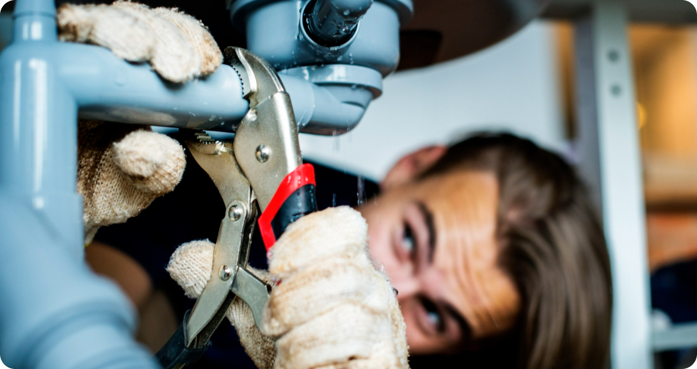
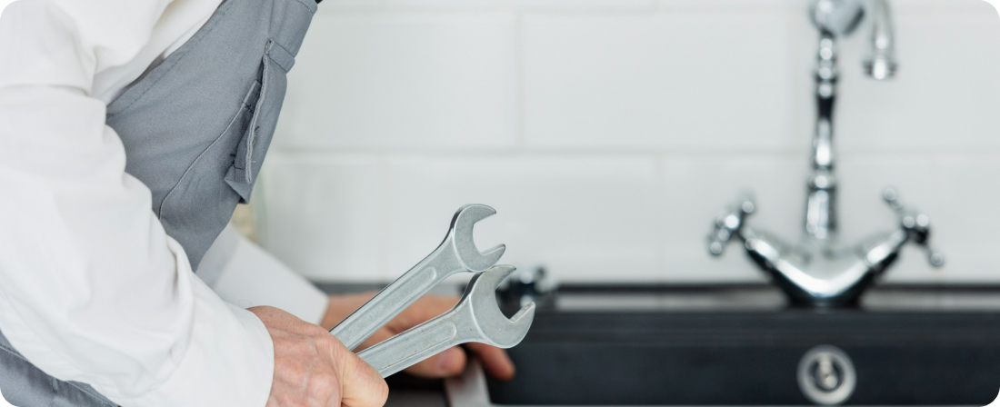

Fire Sprinkler System Maintenance: Keeping Your Home Safe
Fire sprinkler systems are a crucial component of any home's fire protection strategy, providing early detection and suppression of fires to prevent property damage and save lives. However, like any other system, fire sprinklers require regular maintenance to ensure they function properly when needed. In this article, we'll discuss the importance of fire sprinkler system maintenance and provide tips for keeping your home safe.
1. Regular Inspections
Regular inspections are essential for ensuring that your fire sprinkler system is in proper working condition. It's recommended to have a professional inspection conducted at least once a year to check for any signs of damage or malfunction. During the inspection, the technician will test the system's components, including the control valves, alarm devices, and sprinkler heads, to ensure they operate as intended.
2. Testing and Maintenance
In addition to inspections, regular testing and maintenance are necessary to keep your fire sprinkler system in top condition. This includes flushing the pipes to remove any debris or buildup, testing the water flow and pressure, and ensuring that all components are free of corrosion or damage. Any issues discovered during testing should be promptly addressed to prevent potential failures during an emergency.
3. Battery Replacement
Many fire sprinkler systems are equipped with battery-powered backup alarms or control panels. It's important to regularly check and replace the batteries in these devices to ensure they remain operational in the event of a power outage. Dead or weak batteries can compromise the effectiveness of the system and put your home at risk.
4. Addressing Water Supply Issues
Fire sprinkler systems rely on a reliable water supply to operate effectively. It's essential to ensure that the water supply to the system is sufficient and free of obstructions. Any issues with the water supply, such as low pressure or flow restrictions, should be addressed promptly to prevent delays in the system's response to a fire.
5. Professional Maintenance Services
While some maintenance tasks can be performed by homeowners, such as visual inspections and battery replacement, certain tasks require the expertise of a professional technician. Hiring a licensed fire sprinkler contractor to perform routine maintenance and repairs ensures that the system is properly maintained and compliant with local fire codes and regulations.
In conclusion, regular maintenance of your fire sprinkler system is essential for keeping your home safe from the threat of fire. By scheduling regular inspections, testing, and maintenance with a qualified technician, you can ensure that your fire sprinkler system operates effectively when needed, providing you with peace of mind and protection for your family and property.